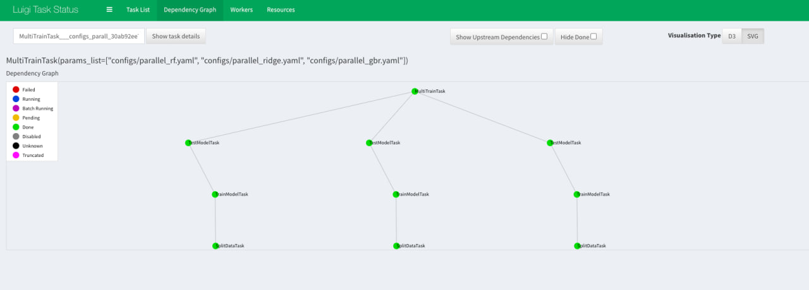

HW4 — отчет по автоматизации ML пайплайнов
Дата: 22 декабря 2025
Задание: Автоматизация ML пайплайнов
Реализован автоматизированный пайплайн на Luigi с валидацией конфигураций через Pydantic.
Выбранные инструменты
Оркестрация: Luigi 3.5.0+ — легковесный инструмент управления воркфлоу с кэшированием и поддержкой параллельного выполнения.
Конфигурации: Pydantic 2.0.0+ — современная библиотека для валидации данных и управления настройками с использованием аннотаций типов.
Реализация
Этап 1: Оркестрация через Luigi
Созданы 3 Luigi tasks с четкой цепочкой зависимостей: SplitDataTask → TrainModelTask → TestModelTask.
Файлы:
- src/wine_quality_epml/pipeline/split_data_task.py — разделение данных на train/eval/test.
- src/wine_quality_epml/pipeline/train_model_task.py — обучение модели (поддержка 10 алгоритмов).
- src/wine_quality_epml/pipeline/test_model_task.py — оценка на тестовом сплите.
- src/wine_quality_epml/pipeline/runner.py — точка входа CLI.
- luigi.cfg — конфигурация планировщика.
Реализованы: кэширование результатов через LocalTarget, поддержка параллелизации через параметр --workers и декларативное описание зависимостей через метод requires().
Запуск:
uv run python -m wine_quality_epml.pipeline.runner --local-scheduler
Дополнительно: Параллельное выполнение
Для демонстрации возможностей Luigi по параллелизации задач реализован MultiTrainTask, который запускает обучение нескольких независимых моделей одновременно.
Запуск с 3 воркерами:
uv run python -m wine_quality_epml.pipeline.runner --multi --workers 3 --local-scheduler
Это позволяет задействовать несколько ядер процессора для обучения разных моделей (например, RF, Ridge и GBR) после завершения общего этапа подготовки данных.
Этап 2: Конфигурация через Pydantic
Создано 11 Pydantic моделей для строгой валидации параметров:
Файлы:
- src/wine_quality_epml/config/schemas.py — Pydantic схемы (SplitConfig, PathsConfig, модели ML, TrainConfig, ProjectConfig).
- src/wine_quality_epml/config/loader.py — загрузчик YAML с поддержкой композиции и переопределения через переменные окружения.
Ключевые особенности:
- Валидация отношений:
SplitConfigпроверяет баланс долей выборок. - Типизация моделей: Каждая из 10 моделей (Linear, Ridge, Lasso, GBR и др.) имеет свои ограничения на гиперпараметры (например,
n_estimators >= 1). - Композиция: Поддержка YAML-композиции (
base: path/to/base.yaml) и env overrides (например,WINE_QUALITY_TRAIN__MODEL_TYPE=lasso).
Этап 3: Интеграция и тестирование
Использование в Luigi Tasks
Задачи Luigi используют загрузчик конфигураций для получения валидированных данных. Это обеспечивает "fail-fast" поведение — пайплайн упадет еще до начала работы при наличии ошибок в конфиге.
Пример загрузки:
def _load_config(self) -> ProjectConfig:
return load_config(Path(str(self.params_path)))
Динамическая инициализация:
Модели создаются на основе model_type из конфигурации, автоматически подставляя нужные гиперпараметры из валидированной Pydantic-схемы.
Логирование и результаты
Добавлено подробное логирование этапов выполнения:
INFO: Data splitting: test=0.15, eval=0.15, seed=42
INFO: Splits created: train=779 rows, eval=172 rows, test=172 rows
INFO: Building gbr with params: {'n_estimators': 3000, 'learning_rate': 0.05, ...}
INFO: Training gbr...
INFO: 📊 Pipeline Summary:
Model: gbr
Test R²: 0.1181
Test RMSE: 0.7355
Итоговые артефакты
Скриншоты
Исполнение пайплайна Luigi

Параллельное выполнение (3 воркера)

Визуализация Luigi UI (Dependency Graph)

Статус выполнения в Luigi UI

Валидация Pydantic

Результаты интеграции

Структура решения
src/wine_quality_epml/
├── pipeline/ # Luigi tasks
│ ├── split_data_task.py
│ ├── train_model_task.py
│ ├── test_model_task.py
│ ├── multi_train_task.py # Новое: параллельное обучение
│ └── runner.py
└── config/ # Схемы и загрузчик
├── schemas.py
└── loader.py
Команды воспроизведения
# Установка зависимостей
uv sync --dev
# Запуск пайплайна с конкретным конфигом
uv run python -m wine_quality_epml.pipeline.runner --params configs/ridge_baseline.yaml --local-scheduler
Пайплайн полностью автоматизирован, типизирован и готов к расширению.